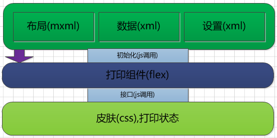
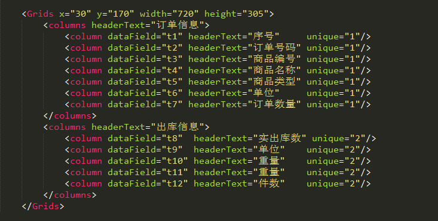
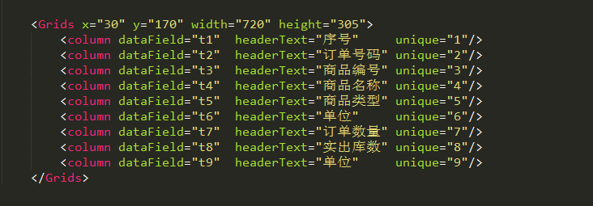
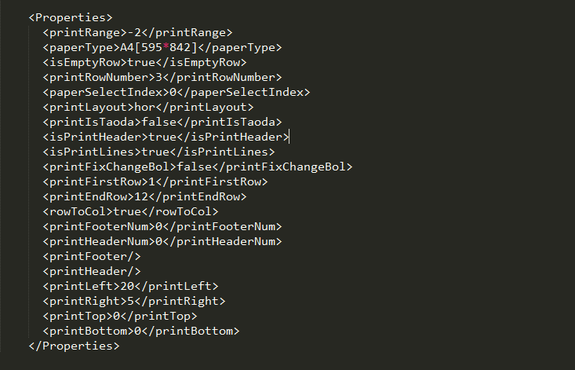
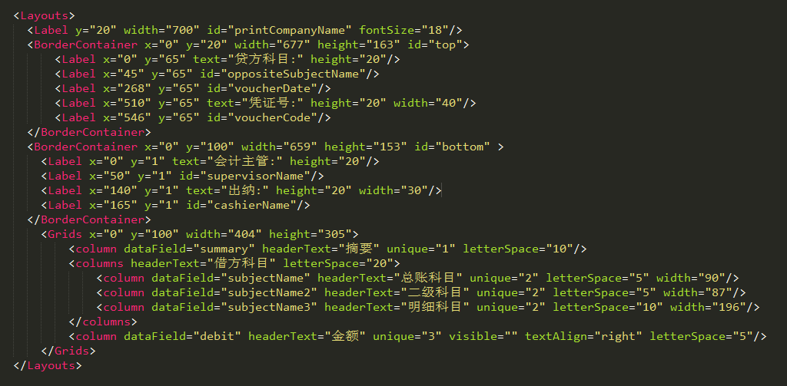
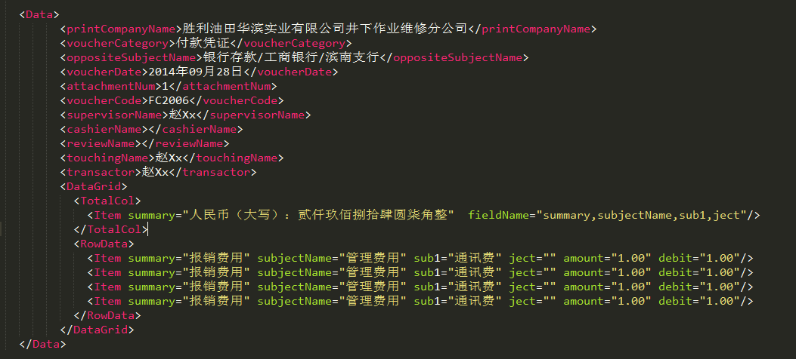

组件介绍
打印组件是以AS3语言开发，通过与页面js通信以xml为数据传输格式开发的一款功能组件，在组件初始化之前需要传递布局模版(必须)，数据模版（必须），打印设置模版（可为空）三个模版。初始化之后可通过打印面板对打印界面进行一些调整。还可针对表格设置显示列和隐藏列，可以进行折页的调整，还可动态调整记录表格列宽 。可以对打印设置进行保存等功能。在传递打印设置之前，需要传递打印模式，即单张打印还是连续打印。默认为单张打印。连打没有预览模式。0为单张打印，1为连打。另外提供套打功能。
系统架构
组件暴露外部接口
ExternalInterface.addCallback("getPrintType",getPrintType);
ExternalInterface.addCallback("getProperties",getProperties);
ExternalInterface.addCallback("getLayout",getLayout);
ExternalInterface.addCallback("getData",getData);
暴露接口介绍
- getPrintType:获取打印模式，连续打印还是单张打印。
- getProperties:获取打印设置。为空时自定义打印设置
- getLayout:获取界面模版。为组件初始化做准备。
- getData:获取数据模版，为组件初始化做准备。
关于表格
表格相关属性列表
- x|y:表格的x|y坐标。
- width:当设置该属性时，该表格宽度为该属性值，当没有设置该宽度时，该表格宽度默认自适应纸张大小。当该属性作用于表格某一列时，为某一列的表格宽度。
- height:设置表格高度值，当设置补空行或者变动列变动行时该表格高度无效。
- borderWidth:设置外围表格线的宽度。
- colHeight:设置行高大小。
- columns:设置复杂列表格时。需要此属性作为复杂列父级标签。
- column:单列的标签名称。
- dataField:表格列的字段名跟数据相对应。
- headerText:表格列标题的内容。
- unique:当为复杂表格时需要此属性来区分父级列。
- letterSpace:设置表格标题的文字间距。
- textAlign:设置每一列的对齐方式。
- visible:设置打印列隐藏或显示。
复杂表格模版样式
简单表格模版样式
关于文本
单独的文本默认以label为标签命名，当文本单独存在时，默认标题创建，文本内容居中。文本也可包裹在一个box中以整体的形式出现。表格上部以top为id命名，表格下部以bottom为id命名。
文本相关属性列表
- id:设置文本的唯一标识，与数据模版的相应标签名一一对应。
- x|y:文本的x|y坐标。
- fontSize:设置文本字体大小
- width:文本的宽度，当设置border为true时，该属性有效。
- height:设置文本的高度。当设置border为true时，该属性有效。
- textAlign:设置文本对齐方式
- border:设置为true时，文本显示外边框。
- visible:设置文本显示或者隐藏
文本模版样式

打印设置介绍
打印设置是为打印预览服务的，当传递给打印组件为空字符串时，组件自动创建默认打印设置，当不为空时，组件解析打印设置内容并创建界面。打印预览时调整相应打印面板时，点击保存，可保存当前打印设置。
打印设置相关属性列表
- printRange:打印范围，为-2时表示打印所有页。为-1时表示打印当前页。为-3为打印奇数页。为-4时表示打印偶数页。也可为一个打印范围值如[1-5,8,11-13]。
- paperType:打印纸张大小可不传。
- isEmptyRow:是否补空行。true为补空行，false为不补空行。
- printRowNumber:每页显示行数，当值为0时默认显示全部行。当不为0时候行数显示为该值。
- paperSelectIndex:选择的打印纸张列表的下标。
- printLayout:打印方向：横向或纵向。横向为hor 纵向为ver.
- printIsTaoda:是否套打。true为套打。
- isPrintHeader:当为套打时，显示是否打印标题。依托printIsTaoda而存在。
- isPrintLines:当为套打时，显示是否打印表格线。依托printIsTaoda而存在。
- printFixChangeBol折页中是否选择固定列还是变动列。默认为true为固定列。
- printFirstRow当为固定列时候表示固定列，即每页中都有该几列。当为变动列时表示第一页的列数。
- printEndRow当为变动列时候表示变动列，即动态的列数。当为变动列表示除第一页外每页显示几列。
- rowToCol标识打印时先列后行还是先行后列。
- printFooterNum表示页脚距离底端的距离
- printHeaderNum表示页眉距离顶端的距离
- printFooter表示页脚文本内容
- printHeader标识页眉文本内容
- printLeft左边距
- printRight右边距
- printTop上边距
- printBottom下边距
打印设置模版样式
界面模版介绍
单个界面模版标签默认为Layouts,表格默认为Grids,当文本以整体的情况时默认节点为BorderContainer,当打印模式为连打时，以multiLayouts为标签内嵌多个Layouts标签。
界面模版样式
数据模版介绍
数据模版最外层标签默认为Data,每个文本的数据标签名称为界面模版中的id名。比如界面模版中有一个文本id为comName则与之对应的数据模版标签名为comName
关于合计行
如果需要加合计行，需要在DataGrid标签下加入合计行数据。标签为TotalCol,需要加入合计行的字段名，以逗号隔开。属性名为fieldName,比如需要合计的字段名为：fiedl1,filed2,filed3,约定的字段应写为filedName="field1,filed2,field3"。当打印多页并且存在合计行时，一般采取在除最后一页之外的其他页面合计行内容改为省略号，则需要把添加省略号的字段添加到elliName中，如elliName="field1,filed2,field3"
数据模版样式
前后台传值
前后台传值是通过组件跟js在页面内进行数据传输。在组件创建加载完成做好准备工作后，组件给页面发出指令，要求页面给组件传值，创建完成接口为AsCreatComplete。之后页面通过js传递给组件界面xml，数据xml和打印设置xml。打印设置可为空字符串。组件只负责接收数据，后台如何传值可根据实际情况自定义。
打印范例
见文件。
模版范例
见文件。
模版设计器介绍
正在开发。
组件文件
- res------------所有文件夹
- file------------静态模版文件，当从后台传递时，可为空。
- Nova.swf------------打印组件
- Print.html------------弹出的打印文件。